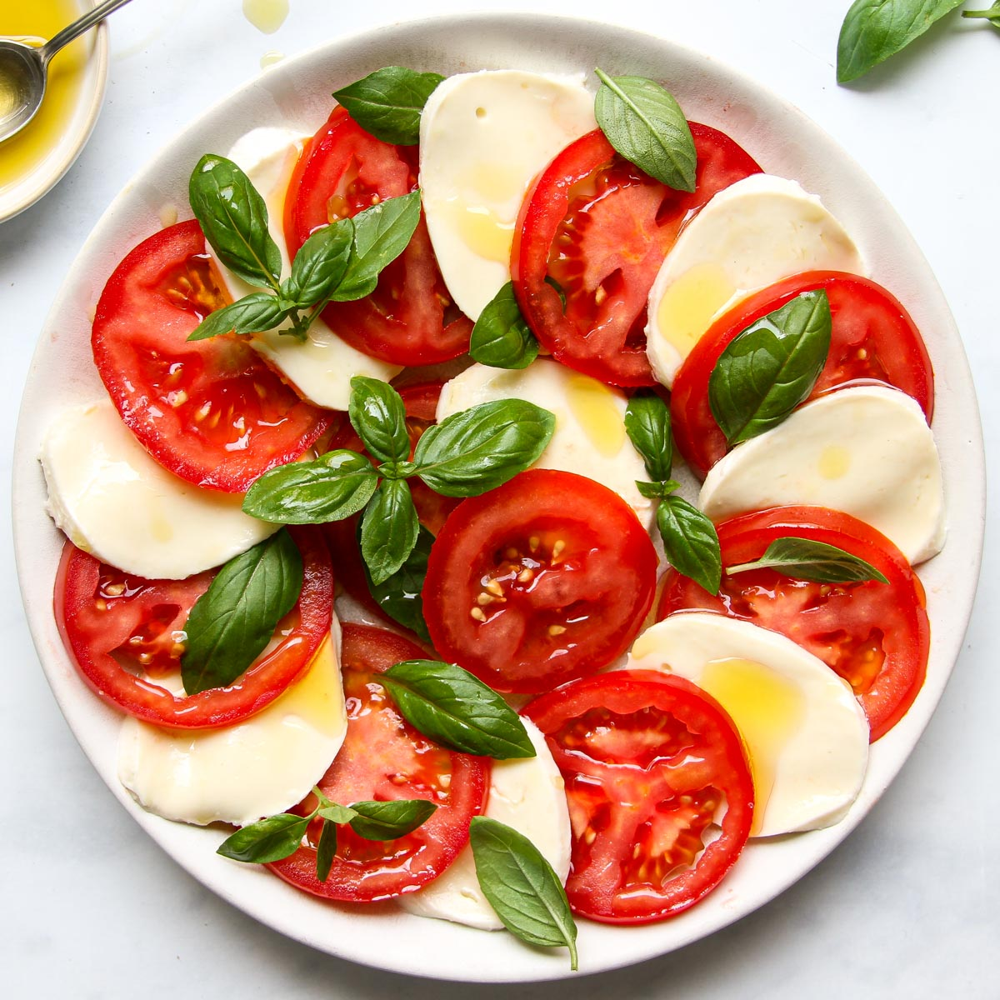

Recipe Classic Italian Caprese Salad

Italian's best classic salad;
Caprese salad is a basic Italian dish made
with sliced tomatoes, fresh mozzarella cheese,
and basil leaves. It's drizzled with olive oil and
balsamic vinegar, offering a light and flavorful
combination of ingredients.
Ingredients!
- Fresh tomatoes
- Fresh mozzarella cheese
- Fresh basil leaves
- Extr virgin olive oil
- Balsamic vinegar
- Salt
- Pepper
Steps!
- Slice the tomatoes and mozzarella cheese into evenly thick slices.
- Arrange the tomato slices on a serving platter.
- Place a slice of mozzarella cheese on top of each tomato slice.
- ake the fresh basil leaves and tear them into smaller pieces.
Sprinkle them over the tomato and mozzarella slices.
- Drizzle extra virgin olive oil and balsamic vinegar over the salad.
- Season with salt and pepper to taste.
- Serve immediately as a refreshing appetizer or side dish.